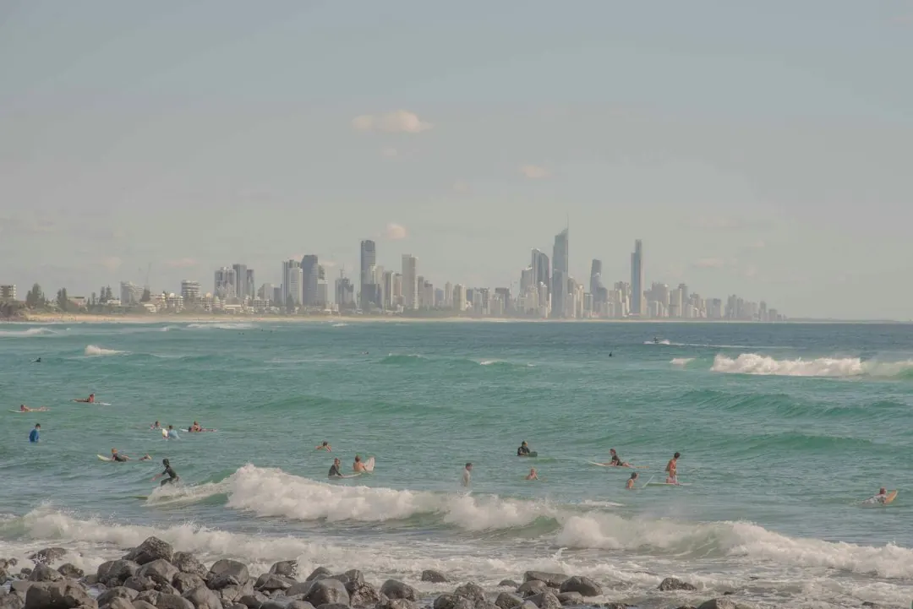

A Gold Coast pool project should begin with the block, pool type and approval sequence. Options include custom concrete, infinity edge, luxury and plunge pools, plus renovations for existing concrete pools. Building approval should come before digging, and the barrier must comply before the pool is filled to 300 mm or more. Compare written scopes for excavation, engineering, access and the barrier, then check the contract and licence before work starts.
For homeowners comparing pool builders gold coast options, the practical decision is how the design, site conditions, approvals, safety barrier and written scope fit together before construction begins.
Pool Builders Gold Coast Explained
Pool Builders Gold Coast describes premium pool planning as a combination of design, cost and approval decisions. Its published options include custom pool design, in situ concrete pools, infinity edge pools, luxury pools, plunge pools and renovation work.
The block should narrow those choices. A compact or narrow access yard may suit a plunge pool, while a sloping or waterfront site can raise questions about an infinity edge, excavation, engineering and retaining. Beachside lots may present different access and ground conditions from hinterland blocks. Ask the builder to explain how the proposed layout responds to the actual property rather than relying on a standard image.
Outdoor living should be considered at the same time. The published guidance places shade, paving, glass fencing and landscaping alongside the pool and its barrier, rather than treating them as later additions. A useful first brief records the available area, preferred pool type, access route, likely equipment location, desired features and target timing.
Match the pool type to the project
Each option creates a different design conversation. Concrete construction can be shaped around the block, while an infinity or wet edge design needs attention to views, slopes and the relationship between the pool and the site. Luxury work may combine a spa, water features, heating, automation and lighting, so those inclusions should be planned and budgeted together.
- Custom design: useful when shape, placement and engineering need to respond closely to the block.
- Concrete pool: an in situ approach involving excavation, shotcrete and the interior finish.
- Infinity edge: suited to a design discussion involving views, slopes or waterfront conditions.
- Plunge pool: a compact option for small, townhouse or narrow access yards.
- Renovation: relevant where an existing concrete pool needs new finishes, coping, tiles, lighting or equipment.
For a separate look at the construction decision, compare this guide with the concrete pool construction guide for the Gold Coast. Ask what excavation, access, engineering and finishing work each option requires.
Approvals, barriers and site coordination
The published planning sequence places building approval before digging. That order affects the early conversation with a builder, particularly where the site has a slope, restricted access or retaining questions. Ask who prepares or coordinates the relevant design and engineering information, what remains for the owner to arrange, and which assumptions are included in the quote.
The pool barrier is another early design constraint. The guidance states that the barrier must be compliant before the pool is filled to 300 mm or more. Fencing, gates and the surrounding layout should therefore be considered alongside the pool, paving and landscaping. Ask for the barrier scope in writing, including what is supplied, what interfaces with existing structures and who checks completion.
Weather can affect the working sequence. The published questions note that Gold Coast summer storms can pause digging and concrete stages at short notice. Before signing, ask who supervises the site each day, how rescheduling is communicated and how the site is checked after heavy rain.
Read the quote as a site document
A free quote can help compare designs and inclusions before deciding who builds, but the bottom line is only useful when the scopes match. The published guidance recommends checking excavation, rock, engineering, access and the barrier, because Gold Coast properties can vary from canal blocks at Hope Island to sloping lots in Mudgeeraba.
Use the same questions for every quote:
- Is the pool type, size, shape and placement clearly described?
- Are excavation, spoil removal, access limits and engineering identified?
- Are finishes, coping, lighting, equipment, heating, automation and water features listed separately?
- Are fencing, gates, paving, shade, landscaping and drainage included, excluded or provisional?
- Who manages approvals, inspections, site supervision and weather related changes?
For work above $3,300, the published guidance says to start only after both parties sign a written, dated contract. Check that the builder's licence covers the pool work in the contract, and retain the final scope, variations and approval documents together.
Who this guide applies to
This information is for Gold Coast homeowners planning a new custom, concrete, infinity edge, luxury or plunge pool, and for owners considering renovation of an existing concrete pool. It is also relevant to people comparing projects across beachside, canal, suburban and hinterland settings, where access, slope and excavation can change the work required.
It is less useful as a simple product comparison for someone seeking a standard kit pool. The source material is focused on premium, site responsive builds and on planning the surrounding outdoor area with the pool and barrier.
Before requesting a quote, prepare the suburb, property area, pool type, preferred timing and site notes. A sketch or inspiration photograph can help, but the published enquiry process says it is optional. Ask for comparable completed work on a similar block, then test the quote against the site questions above.
- Record the site brief. Write down the suburb, available area, access route, preferred pool type, site notes and target timing.
- Choose the design direction. Compare custom, concrete, infinity edge, luxury, plunge and renovation options against the block and intended outdoor use.
- Ask approval questions. Confirm the building approval sequence, barrier scope, engineering responsibilities and any retaining assumptions.
- Compare written quotes. Use matching scopes and check excavation, rock, access, engineering, finishes, equipment, fencing and landscaping.
- Sign only when clear. For work above $3,300, check the licence scope and sign a written, dated contract before work starts.
| Project direction | Questions to resolve | Useful comparison point |
|---|---|---|
| New custom or concrete pool | How will shape, placement, excavation and engineering respond to the block? | Compare the written site scope, access assumptions and finishes. |
| Infinity edge or luxury pool | How do the view, slope, edge detail, spa, heating, lighting or automation affect the design? | Check which features are included and how the site sequence is managed. |
| Plunge pool | Can equipment, access, excavation and the barrier work within a compact yard? | Confirm narrow access conditions, surrounding paving and fencing. |
| Existing pool renovation | Which finishes, coping, tiles, lighting and equipment are being replaced? | Separate renewal work from any new landscaping or barrier work. |
Common questions
Can a plunge pool suit a narrow Gold Coast yard? The published options describe plunge pools as compact concrete pools for small, townhouse and narrow access yards. Ask how equipment access, excavation, the barrier and surrounding finishes will fit the particular property.
What should be compared in two pool quotes? Compare the same written scope, including excavation, rock, engineering, access and the barrier. Also ask which finishes, equipment, landscaping and drainage items are included or excluded.
When should approval be addressed? The published guidance places building approval before digging. Ask who coordinates the approval information and what the owner must arrange before construction begins.
What happens if storms interrupt the work? Gold Coast summer storms can pause digging and concrete stages. Ask for the site supervisor's name, the rescheduling process and how the site is checked after heavy rain.
This guide covers pool design choices, site questions, approvals, barriers, quote comparisons and contract checks for Gold Coast projects.